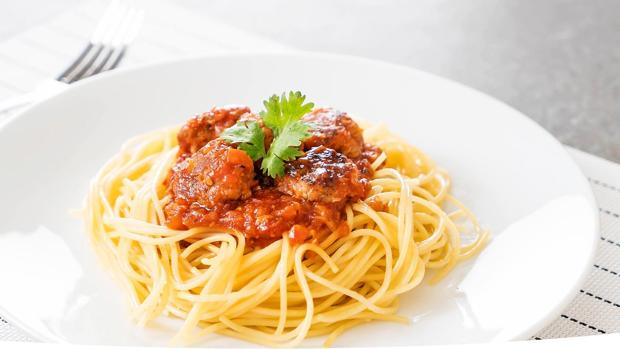

Cocinando
El Blog de los amantes de la Gastronomia
Favoritos

Historial:
Ravioles de carne gratinados
Postres en 5 minutos
Formas de ornear en casa
Pollo en salsa
Cañon de cerdo BBQ
Pasta Artesanal
2 de septiembre de 2019

Existe una pequeña fórmula que casi siempre funciona cuando preparamos pasta y esta es: 100 g de sémola de trigo duro o harina 00 + 1 huevo por persona. La realidad no es siempre como las matemáticas ya que con 100 g por persona la porción de pasta es muy abundante, para mí demasiado, pero claro depende del comensal. Por otro lado la cantidad de líquido, que puede ser huevo y a veces agua (según el tipo de pasta), dependerá del tipo de sémola o harina que utilicemos y de su capacidad de absorción. Los grandes maestros de pasta dicen que hasta la altura a la que nos encontremos respecto al nivel del mar puede influir, pero eso es ya otra historia…
Maria65: este post es interesante
JuanF: Tengo una pregunta, me gustaria saber a que temperatura podemos encontrar un equilibrio al dejar la pasta en reposo.
Jessi213: Que buen post, aprendi mucho sobre la pasta artesanal
Los Mejores Jugos Naturales Para Adelgazar
2 de septiembre de 2019
Existe una pequeña fórmula que casi siempre funciona cuando preparamos pasta y esta es: 100 g de sémola de trigo duro o harina 00 + 1 huevo por persona. La realidad no es siempre como las matemáticas ya que con 100 g por persona la porción de pasta es muy abundante, para mí demasiado, pero claro depende del comensal. Por otro lado la cantidad de líquido, que puede ser huevo y a veces agua (según el tipo de pasta), dependerá del tipo de sémola o harina que utilicemos y de su capacidad de absorción. Los grandes maestros de pasta dicen que hasta la altura a la que nos encontremos respecto al nivel del mar puede influir, pero eso es ya otra historia…
JuanaRH22: Lo pondre en practica...